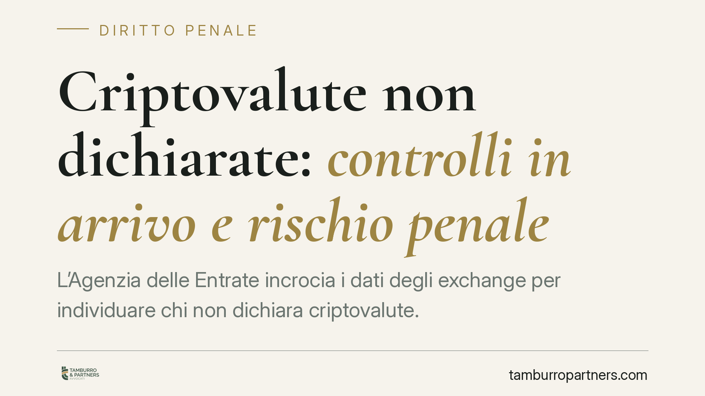

Criptovalute non dichiarate: controlli in arrivo e rischio penale
L'Agenzia delle Entrate incrocia i dati degli exchange per individuare chi non dichiara criptovalute. Con lo scambio automatico di informazioni previsto dalla DAC 8, il margine per l'omissione si restringe. Detenere cripto è lecito: ciò che genera responsabilità, anche penale, è non dichiararle. Ecco cosa rischia il contribuente e come muoversi.

Il cambio di scenario: dal Fisco che deve scoprire al Fisco che riceve i dati
Per anni la detenzione di criptovalute è stata percepita come opaca. Quella fase si sta chiudendo.
L'Agenzia delle Entrate ha avviato accertamenti mirati, incrociando le informazioni trasmesse dagli exchange e dai prestatori di servizi sulle cripto-attività (i cosiddetti *service provider*). Il passaggio chiave è di prospettiva: non è più il contribuente a poter contare sull'invisibilità, è il Fisco a ricevere i dati.
Questo meccanismo è destinato a rafforzarsi con la DAC 8, la direttiva europea che introduce lo scambio automatico di informazioni sulle cripto-attività tra le amministrazioni finanziarie degli Stati membri. Il decreto di recepimento della DAC 8 renderà strutturale la circolazione dei dati. In parallelo, con il quadro MiCAR la vigilanza sui prestatori di servizi passa a Banca d'Italia e Consob.
Cosa deve dichiarare il contribuente
Due sono gli obblighi principali.
Il primo è il monitoraggio fiscale: le cripto-attività detenute vanno indicate nel quadro RW della dichiarazione. Su di esse grava un'imposta di bollo (o patrimoniale sostitutiva) pari allo 0,2% annuo del valore, introdotta dalla Legge 197/2022.
Il secondo riguarda le plusvalenze. Le operazioni che generano guadagni imponibili (ad esempio la conversione in euro o l'utilizzo per acquisti) scontano un'imposta sostitutiva. La Legge 197/2022 aveva previsto una soglia annua di esenzione di 2.000 euro e un'aliquota del 26%. Attenzione, però: la Legge di Bilancio 2025 è intervenuta sul regime, superando quel sistema e prevedendo un incremento dell'aliquota a decorrere dal 2026. È indispensabile verificare l'aliquota vigente per l'anno d'imposta di riferimento prima di calcolare l'imposta dovuta.
Quando l'omissione diventa reato
Qui si colloca il cuore penalistico della questione.
La semplice detenzione di criptovalute è lecita. Ciò che può generare responsabilità è l'omissione dichiarativa quando supera determinate soglie.
Rilevano due fattispecie del D.lgs. 74/2000:
- Dichiarazione infedele (art. 4): si configura quando l'imposta evasa supera 100.000 euro e gli elementi attivi sottratti superano il 10% del dichiarato o comunque 2 milioni di euro.
- Omessa dichiarazione (art. 5): si configura, per chi è tenuto a presentarla e non lo fa, quando l'imposta evasa supera 50.000 euro.
Entrambi i reati richiedono il dolo specifico di evasione: non basta l'errore o la dimenticanza, occorre la volontà di sottrarsi al pagamento delle imposte. Al di sotto delle soglie, la violazione resta sul piano amministrativo (sanzioni tributarie), non penale.
Un profilo tecnico spesso trascurato è il momento consumativo. Per l'omessa dichiarazione il reato si perfeziona non alla scadenza ordinaria, ma decorsi novanta giorni da tale termine: entro quella finestra la dichiarazione tardiva è ancora possibile ed evita la rilevanza penale.
Il ruolo del ravvedimento
L'art. 13 del D.lgs. 74/2000 assegna al pagamento del debito tributario un peso decisivo. Per i reati dichiarativi degli artt. 4 e 5, l'integrale versamento di imposte, sanzioni e interessi — se avviene prima della conoscenza di controlli o accertamenti — può operare come causa di non punibilità. Regolarizzare spontaneamente, dunque, non è solo prudenza fiscale: incide direttamente sulla sfera penale.
Implicazioni pratiche
Chi ha operato in cripto senza dichiarare deve considerare che la posizione potrebbe già essere nota o diventarlo a breve. Il tempo utile per intervenire con effetti favorevoli è quello che precede la notifica di un atto o l'avvio di verifiche. Dopo, gli spazi si riducono sensibilmente.
Cosa fare in concreto
- Ricostruisci le operazioni anno per anno: acquisti, conversioni, trasferimenti e utilizzi, recuperando gli storici dagli exchange.
- Verifica il superamento delle soglie penali degli artt. 4 e 5 del D.lgs. 74/2000, distinguendo il piano amministrativo da quello penale.
- Valuta il ravvedimento operoso prima che intervengano controlli, tenendo conto degli effetti dell'art. 13 sulla punibilità.
- Controlla l'aliquota e il regime vigenti per ciascun anno d'imposta, senza applicare acriticamente il 26% del passato.
- È opportuno far esaminare la posizione da un professionista in ambito penale-tributario prima di presentare dichiarazioni integrative o rispondere a un questionario.
---
Contributo informativo a cura di Tamburro & Partners Avvocati. Non costituisce parere legale.
Ogni condominio ha una storia a sé.
Se gestisci un'amministrazione e vuoi un confronto su una specifica questione condominiale, scrivi allo studio. Ti rispondiamo entro un giorno lavorativo.